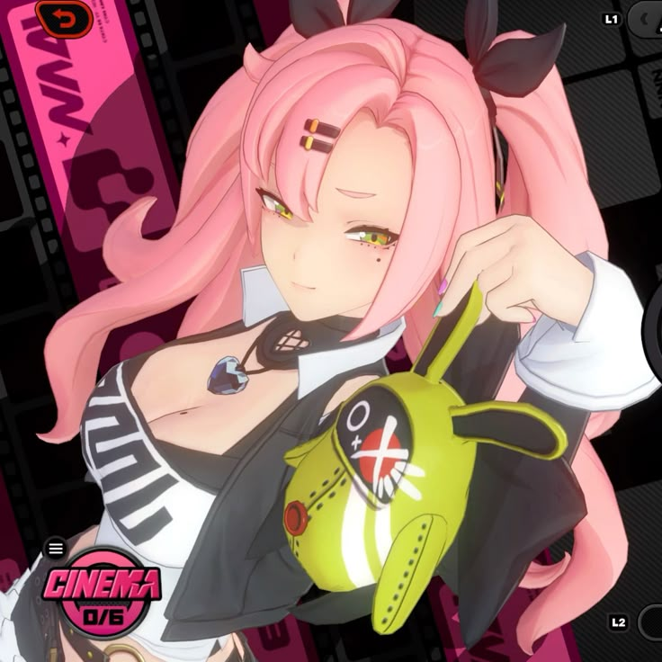
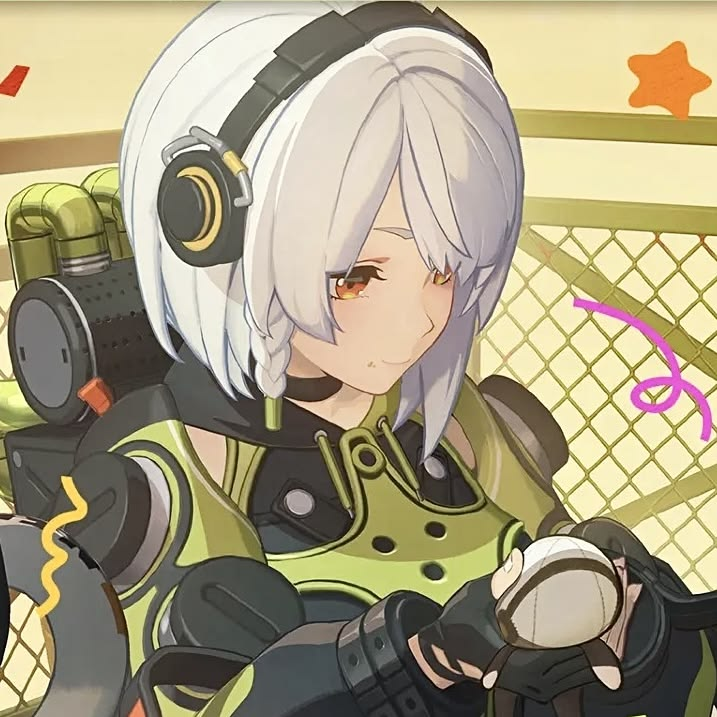
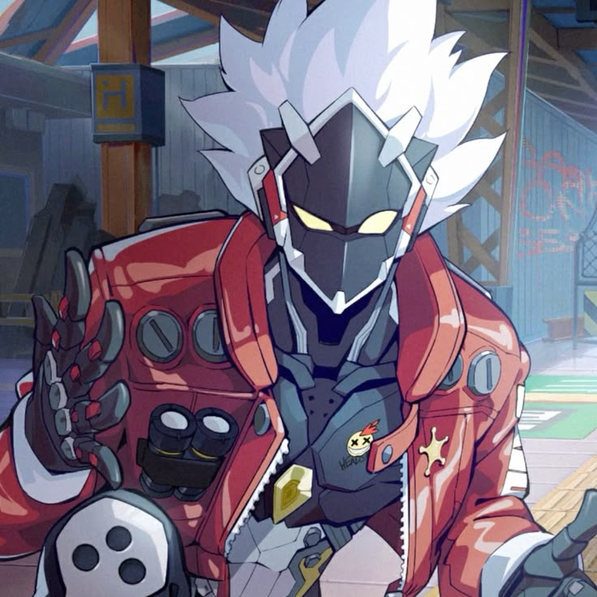
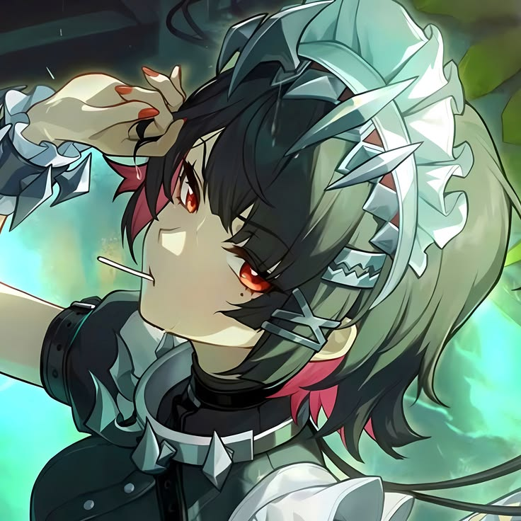
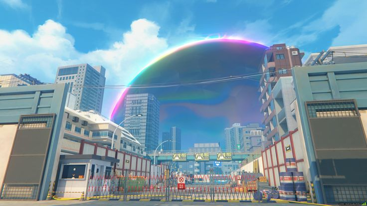

BEM VINDO AO ZENLESS ZONE ZERO.
Entre nos Hollows, conheça os agentes e descubra os segredos de uma cidade que aprendeu a viver à beira do desconhecido.
AVENTURA
EM NOVA ERIDU
ZONE ZERO
UMA CIDADE. VÁRIOS MISTÉRIOS.
Zenless Zone Zero é um RPG de ação desenvolvido pela HoYoverse. A história acontece em Nova Eridu, uma cidade que sobreviveu ao surgimento de fenômenos dimensionais conhecidos como Hollows.
Como Proxy, você acompanha agentes em missões perigosas, enfrenta criaturas e desvenda histórias em meio à vida urbana, música e muita personalidade.
CONHEÇA AS FACÇÕES ↗ESCOLHA SEU AGENTE.
Alguns rostos conhecidos de Nova Eridu. Use a busca para encontrar um agente.

Nicole Demara
Lebres astutas
Anby Demara
Lebres astutas
Billy Kid
Lebres astutasKoleda Belobog
BELOBOGGrace Howard
BELOBOG
Ellen Joe
Agência de pessoal doméstico "Victoria"Nenhum agente encontrado.
QUEM MOVE NOVA ERIDU?
Conheça alguns grupos que fazem parte do universo de Zenless Zone Zero.
CUNNING HARES
Um grupo independente que aceita trabalhos variados e encara missões nos Hollows.
INDEPENDENT CONTRACTORSBELOBOG
Uma empresa ligada à construção e à indústria, conhecida por seus trabalhadores determinados.
HEAVY INDUSTRIESVICTORIA HOUSEKEEPING
Uma equipe de funcionários elegantes que também sabe lidar com tarefas nada comuns.
PROFESSIONAL SERVICE
A CIDADE QUE NUNCA PARA.
Nova Eridu é o último grande refúgio da humanidade em um mundo transformado pelos Hollows. Entre uma missão e outra, sempre existe algo para descobrir.